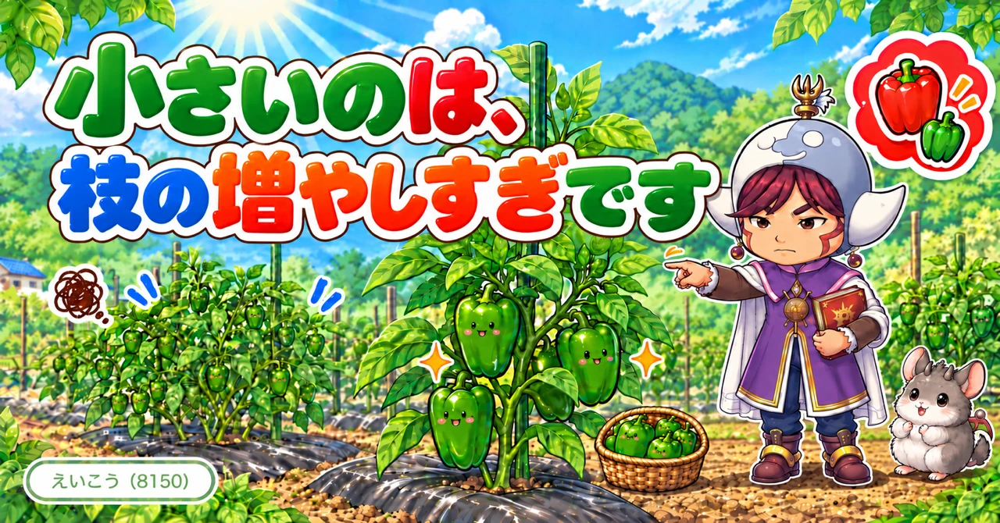
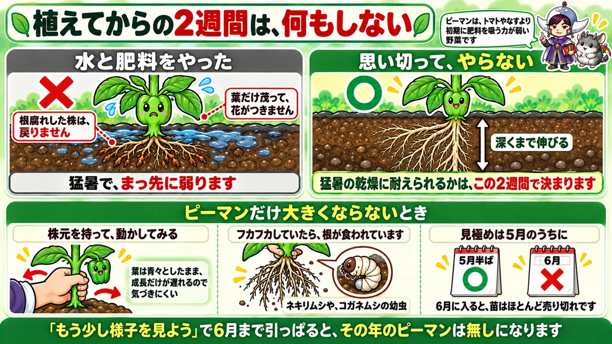
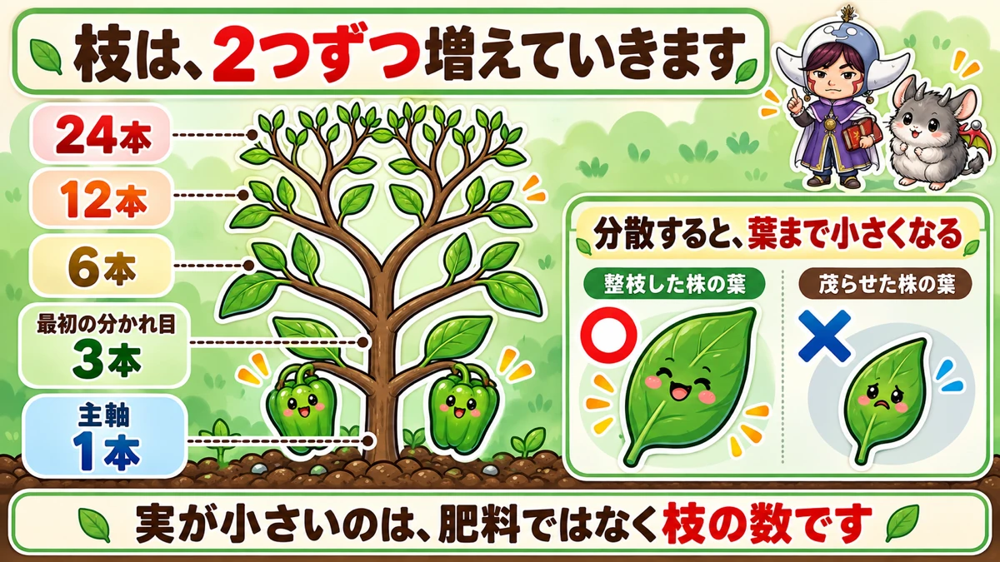
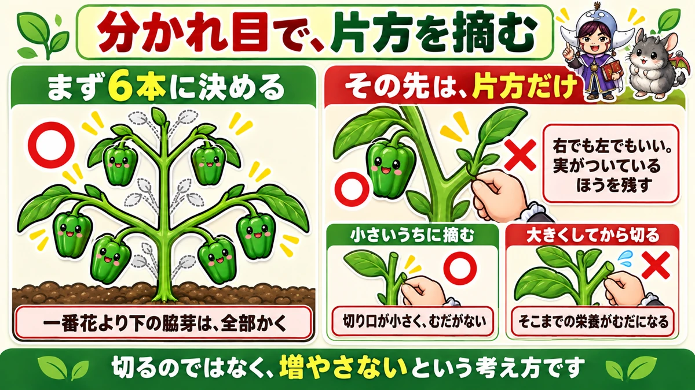
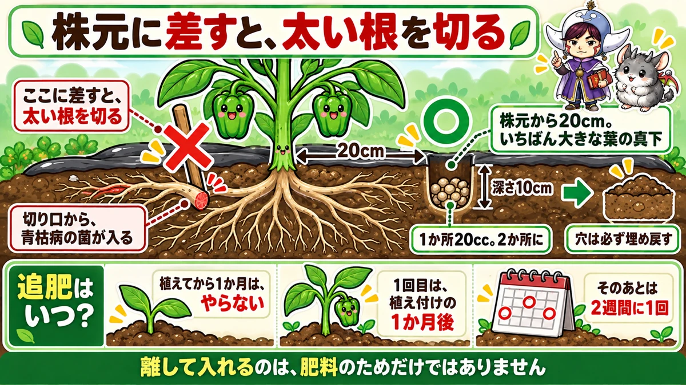
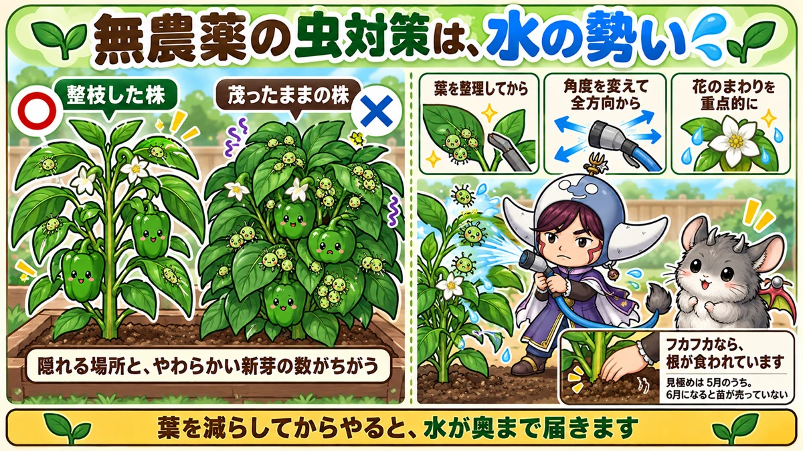
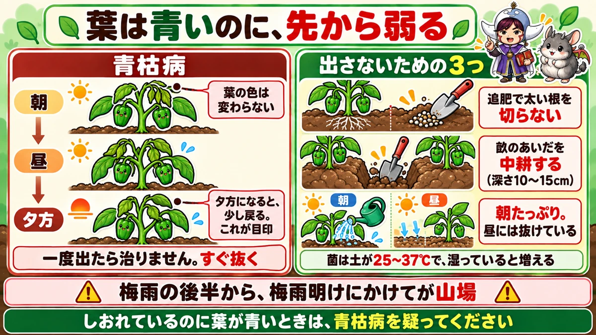

ピーマンの育て方｜苗選び、植えつけ後2週間、枝の仕立て、支柱、追肥、虫と病気、収穫と切り戻し

どうも、8150（えいこう）です🌱 家庭菜園歴8年、理科の教員免許を持っていて、有機・無農薬で野菜を育てています。
📖 この記事の目次
この記事で分かること
- ピーマンはナス科の野菜で、育つのにちょうどよい温度は20〜30度くらいです。トマトやなすより虫がつきにくく、無農薬でも育てやすい夏野菜です。
- 苗は、ポットが大きく土が多いもの、茎が太くがっしりしたもの、根が白いものを選びます。
- 植えてから2週間は、根を深く伸ばす時期です。畑では水を控えめにし、追肥はまだしません。
- ピーマンの枝は、分かれ目ごとに2つずつ増えていきます。増えすぎると実が小さくなるので、分かれ目で片方を摘んで、枝の数を整えます。
- 追肥は、根の先があるあたり（株元から少し離れたところ）に入れます。
- カメムシ、タバコガ、アブラムシなどが来ることがあります。枝葉を整理して、風通しをよくしておくと、虫の予防にもつながります。
ピーマンは、夏から秋まで長く収穫できる、家庭菜園の頼もしい夏野菜です。トマトやなすにくらべて病気や虫が少なく、初めての方でも育てやすい野菜としてよく紹介されます。1株からたくさんの実がとれるので、2〜3株植えておけば、毎日の料理に使えるほど収穫できることもあります。
でも、「実が小さい」「途中で育ちが止まった」「実に穴があいていた」など、思ったように育たないこともあります。この記事では、ピーマンの育て方を、苗選びから植えつけ、仕立て、追肥、虫と病気、収穫まで、順番に書いていきます。説明が分かれているところは、両方の考え方を並べておきますね。
早見：ピーマンの基本（ひと目で分かる目安）
基本データ
- 科：ナス科（トマト、なす、じゃがいもの仲間）
- 原産地：熱帯アメリカ
- 育つのにちょうどよい温度：20〜30度くらい
- 連作：同じナス科を育てていない場所に植える。3〜4年あける、という説明
植えつけの目安
- 時期：最低気温が10度を上回る日が続くころ。早く植えるなら、あんどんや不織布で守る
- 株間：50cm前後（広くとる例もある）
- 植えたら、仮支柱で支える
育て方のポイント
- 植えてから2週間は、水も肥料も控えめに
- 分かれ目で片方を摘んで、枝の数を整える
- 追肥は、株元から少し離れた根の先あたりに
苗を買うとき、どこを見るか
ポットが大きく、土が多いもの
苗を選ぶときは、ポットの土が多く、ポットのサイズも大きいものが、よい苗の兆候だ、と説明されます。土が多いほど、根がよく育っているからです。
茎が太く、がっしりしたもの
茎は、しっかりと太く、がっしりしたものがよい、と説明されます。ひょろっと細長く伸びた苗は避けましょう。
根が白いもの
根が白い状態の苗がよく、古くなってくると根の色が悪くなってくる、と説明されます。ポットの底の穴から根が見えるようなら、その色を確かめてみてください。ただし、お店で勝手に苗をポットから抜いて確かめるのはやめて、底の様子を見る程度にしましょう。
自根苗か、接ぎ木苗か
苗には、そのまま育てた自根苗（じこんなえ）と、病気に強い株に接いだ接ぎ木苗があります。自根苗でもよい、という説明がある一方で、連作障害が心配な家庭菜園や、長く安定して収穫したい場合は接ぎ木苗がおすすめ、という説明もあります。初めてなら接ぎ木苗を、という説明もあります。
植えつけ
植える場所
ピーマンはナス科の野菜なので、トマトやなす、じゃがいもなど、同じナス科の野菜を3〜4年育てていない場所に植えるようにしてください、と説明されます。同じ場所で続けて育てると、育ちが悪くなる（連作障害）ことがあるからです。
植える時期
最低気温が10度を上回るような日が続けばよい、と説明されます。4月下旬だと、まだ最低気温が10度を下回る日もあるので、早く植える場合は、あんどんで囲ったり、不織布のトンネルをかけたりする方法がすすめられています。
元肥と、土づくりが間に合わないとき
植える場所には、前もって元肥を入れて土づくりをしておきます。土づくりが間に合わない場合は、植え穴を深く掘って、その底に肥料を入れる「穴肥」という方法があります。
このとき、穴の深さは30cmくらいにして、絶対に浅くならないように、と説明されます。野菜の根が直接肥料にふれないようにするためです。肥料の上に、肥料の入っていない土を戻してから、苗を植えます。
近くに植える野菜にも気をつける
麦の仲間やナス科の野菜のあとには、ピーマンを植えないほうがよい、という説明があります。また、とうもろこしは背が高く、肥料も多く吸うので、ピーマンの近くに植えるのは避ける、という説明もあります。日当たりと肥料を取り合わない配置を考えましょう。
株間
株と株のあいだは、50cm前後とる例が多いです。ふだんは75cm、反射するマルチを広く使うときは100cmと、広くとる例もあります。仕立て方や、虫よけのマルチを使うかどうかで変わります。
手順：植えつけの流れ
- 植える前に、苗のポットごと水を吸わせておく
- 植え穴をあけ、苗を置いて、まわりの土をなじませる
- 植え終わったら、株元に水をたっぷりやる
- すぐに仮支柱を立てて、苗を支える
仮支柱の立て方
植えたらすぐに、支柱を斜めに差して、苗と支柱をひもで結びます。根鉢を傷めない位置に、45度くらいの角度で差し、ひもにはゆとりを持たせて結ぶ、という例があります。植えたばかりの苗は、風で揺れると根が切れやすいので、早めに支えてあげましょう。

植えてから2週間が、いちばんの山場
水を控えて、根を深く伸ばす
植えたばかりのピーマンは、つい毎日水をやりたくなりますが、わざと水やりを控えめにして、水を求めて根が深く伸びるようにしたほうがよい、と説明されます。最初のうちは水を控えて、根を伸ばさせる、という考え方です。
畑の場合は、思い切って水はやらないと決めてもよい、という説明があります。一方、プランターの場合は、水の管理が少し難しいので、2週間のあいだはしっかり状態を確かめながら水をやってください、という説明です。
植えつけの日の水は別
ここで控えるのは、植えたあとの毎日の水やりです。植える前に苗に水を吸わせることや、植え終わったときに株元にたっぷり水をやることまで、やめるわけではありません。また、雨が降らず、土がからからに乾いているような場合は、水をやって根まで届かせる、という説明もあります。
追肥は、まだしない
植えてすぐの2週間のあいだは、追肥をしないで、育ちを見守るようにしてください、と説明されます。初めのうちに肥料が多すぎると、根や花に悪い影響が出ることがある、という説明です。植えたばかりで育ちがゆっくりなのは、根を伸ばしている最中だからで、肥料が足りないからとは限りません。
「大きくならない」原因が、根のことも
葉は青いのに、育ちが止まる
植えてしばらくたっても、葉は青々としているのに、なかなか大きくならない。そんなときは、土の中で根が食べられている可能性があります。
根を食べる虫として、ネキリムシの名前があがることがありますが、最も多いのはコガネムシの幼虫だ、と説明されます。地上の葉は枯れずにそのままなので、なかなか気づきにくいのが厄介なところです。
株元を軽く揺らしてみる
根が食べられているかどうかは、株元を持って、ちょっと揺らしたり、軽く持ち上げるように引っ張ったりしてみると分かる、と説明されます。根がないと、簡単に抜けたり、ぐらぐらしたりします。しっかり根づいている株なら、軽く引っ張ってもしっかり根を張っている感触が指に伝わってきます。
ただし、これは様子がおかしい株を確かめるための方法です。元気な株を強く引っ張らないように気をつけましょう。株元がぐらぐらしていたら、土を少し掘って、幼虫がいないか確かめてください。

ピーマンの枝の増え方
分かれ目ごとに、2つずつ増える
ピーマンの枝は、分かれ目のところで、2つに分かれながら伸びていきます。最初に分かれる枝の数は、株によって違い、2本のこともあれば、3本のこともあります。そこから先は、分かれ目ごとに二股に分かれていきます。
たとえば、最初に3本に分かれた株は、次の分かれ目で6本、その次で12本、さらに24本、と増えていく、という説明があります。何もしないと、枝はどんどん増えていくんですね。
枝が多すぎると、実が小さくなる
枝が多すぎると、栄養が分散して、葉も実も小さくなってしまう、と説明されます。実の数は多くても、一つひとつが小さく、薄い実ばかりになってしまうんですね。また、枝葉が込み合うと、株の内側が日陰になり、風通しも悪くなります。
最初の分かれ目より下の脇芽を取る
ピーマンは、いちばん下で枝分かれします。そこから下に出てくる脇芽は、すべて取る、と説明されます。最初の分かれ目より下の脇芽を取っておくと、株元の風通しがよくなり、上の枝に栄養が回ります。

分かれ目で、片方を摘む
片方を摘んで、本数を決める
枝の数を整えるには、分かれ目のところで、片方の枝を摘みます。右でも左でも、どちらでもよい、と説明されます。これをずっと続けていくと、決めた本数の枝で育てる「仕立て」ができます。
たとえば、最初に3本に分かれた株なら、次の分かれ目で6本にしたあと、それぞれの分かれ目で片方を摘み続けて、6本仕立てにする、という例があります。最初の分かれが2本なら2本のままで、3本なら3本のままでよく、無理に増やす必要はない、とも説明されます。
早めに摘むと、残した側が育つ
早い段階で芽を摘むと、残したほうの葉が早く大きくなる、と説明されます。枝が伸びてからまとめて切るより、小さいうちにこまめに摘むほうが、株への負担も少なくてすみます。
仕立て方は、いろいろある
仕立て方は、話している人によって違います。
- V字に分かれた2本の枝を中心に育てる
- 最初に分かれた2〜3本を主な枝にする
- 分かれ目を増やして、6本や8本にする
どれが正しいというより、畑の広さや、どれくらい手をかけられるかで選びましょう。初めてなら、本数の少ない仕立てのほうが管理しやすいと思います。
一番花と一番果
いちばん最初に咲く花（一番花）や、最初にできる実（一番果）は、どうするかが説明によって違います。
- 大きくなる前に早めに摘んで、株を育てるほうに力を回す
- 残しても大丈夫
一番花と二番花を大きく育てると、あとから実る実が大きく育たない、という説明もあります。株がまだ小さいうちは、早めに摘んでおくほうが、その後の収穫が安定しやすいと考えられます。
支柱
仮支柱から本支柱へ
植えたときに立てた仮支柱のあと、株が大きくなってきたら、本支柱で支えます。ピーマンの実演では、長さ150cmの支柱を根元近くにしっかり差して、枝ごとにひもを増やして支える、という方法があります。
支柱の本数と、枝の本数は別
1本の支柱から、ひもで複数の枝を吊るして支える方法もあります。「支柱が1本」だからといって、「枝が1本」というわけではありません。V字に誘引したり、真ん中の支柱から枝を吊ったり、トンネルの支柱にひもを張ったりと、支え方はいろいろあります。
実の重みで枝が折れないように
ピーマンの枝は、実がたくさんつくと重みで折れやすくなります。実が増えてくる前に、枝を支柱やひもでしっかり支えておきましょう。

追肥
最初の追肥の時期
最初の追肥の時期は、説明によって違います。
- 植えてから約3週間後か、一番果を収穫しはじめたころ。株が弱ければ早め、勢いが強ければ遅めに
- 植えてから約1か月後。そのあと2週間に1回
- 植えてから約1か月後
追肥のやり方
株元から20cmくらい離れたところに、支柱などで深さ10cmくらいの穴をあけ、肥料を20ccくらい入れて、土でふたをする、という例があります。株の両側の2か所に入れます。穴に入れると、まわりに肥料が飛び散るのを防げる、と説明されます。
追肥の位置は、株の大きさで変わる
株がまだ小さいうちは、株元から10cmくらいのところに入れる、という説明があります。離れすぎると、根に届くまでに時間がかかるからです。株が大きくなったら20〜25cmほど離し、後半には畝の外側に入れる例もあります。根がどこまで広がっているかに合わせて、追肥の位置を変えていきます。
肥料は多すぎても少なすぎてもだめ
肥料が多すぎると、特に窒素が多すぎると、花が落ちてしまうことがある、と説明されます。一方で、ピーマンは肥料切れに弱いので、長く収穫するには肥料を切らさないことも大切、という説明があります。窒素を控えめにしながら、肥料を切らさない、というバランスがポイントです。
水やり
プランターは乾きやすい
プランターは入る土の量が限られているので、乾燥しやすい、と説明されます。暑い時期は、エアコンの室外機の熱風が当たる場所では、さらに乾きやすくなります。プランターは、土の乾き具合をこまめに見て水をやりましょう。夏の暑い日は、朝と夕方の2回水が必要になることもあります。
夏は、根まで届く水を
育ちの後半になると、表面を少しぬらすだけでは、根まで水が届かない、と説明されます。水をやるときは、根まで届くように、たっぷりやります。
朝にたっぷり、昼は抜ける土に
暑い時期の土の理想は、朝に水をたっぷりやって、昼間にはある程度水が抜けている状態だ、という説明があります。いつも水びたしの状態にしないことが、病気の予防にもつながります。

虫と病気
ピーマンは、虫が比較的少ない
ピーマンは、ほかのナス科の野菜より虫の被害が少なく、無農薬でも育てやすい、と説明されます。これは、ピーマンを育てるうれしい点のひとつです。それでも、カメムシ、タバコガ、アブラムシなどは来ることがあります。
カメムシ
ピーマンに来る虫で多いのは、カメムシだ、と説明されます。緑色で見つけにくいのが厄介なところです。葉の色にまぎれてしまうので、葉の裏や枝のつけ根、実のまわりを、意識して探すようにしましょう。地域によっては、年によって数が増えることもあります。カメムシは、実を食べつくすというより、実に傷をつけたり、でこぼこにしたりすることが多い、という説明です。
葉が多く、もさもさと茂った株ほど、カメムシがつきやすく、株の内側が日陰になる、と説明されます。
タバコガ
タバコガは、葉やヘタ、実に卵を1つずつ産み、かえった幼虫はすぐに実に潜りこんで、中のタネを食べてしまいます。実に穴があいていたら、タバコガの幼虫の可能性があります。穴のまわりに、ふんがついていることもあります。7月から8月ごろに多い、という説明があります。
実に入りこまれると取り除けないので、卵か、実に入る前の幼虫のうちに見つけて取ることが大切です。穴のあいた実は、取って処分しましょう。
アブラムシとハダニ
アブラムシは、成長点や葉の裏に多くつき、実のふくらみを遅らせる、と説明されます。ハダニは、葉の裏にかたまって、葉を白っぽく変色させます。
アブラムシの対策として、葉を整理してから、水を勢いよくかけて吹き飛ばす、という方法も紹介されています。いろいろな方向から水をかけ、花のまわりを重点的に、という実演です。強い雨が降ったときと同じようなもので、花が落ちても、また咲く、という説明です。
整枝が、そのまま虫の予防になる
枝葉を整理して、込み合いを減らすと、風通しがよくなり、病気や虫の予防につながる、と説明されます。込み合って湿気がこもると、アブラムシやカメムシが寄ってきて、病気や実の腐れの原因になる、という説明もあります。
ただし、整枝だけで虫がまったく来なくなるわけではありません。ふだんから葉の裏や実を見て、早めに見つけることが大切です。
反射するマルチで虫よけ
光を反射するシルバーマルチやアルミのマルチを畝に敷いて、その反射でカメムシやアブラムシ、ダニを寄せにくくする、という方法も紹介されています。光の反射を嫌う虫が、近寄りにくくなるという考え方です。土をできるだけ見せないように、マルチの穴を小さくする、という工夫もあります。
毎日の見回りで見るところ
ピーマンの最盛期は、毎日のように実が育っていきます。畑に行ったら、次のところを見て回りましょう。
- 収穫できる大きさの実がないか
- 実に穴があいていないか（タバコガ）
- 葉の裏や枝のつけ根にカメムシがいないか
- 新しい芽の先にアブラムシがいないか
- 株が急にしおれていないか（青枯病）
- 枝が実の重みで垂れ下がっていないか
収穫のついでに、これだけ見ておけば、虫や病気を早めに見つけられます。

青枯病を疑うサイン
夏に注意したい病気に、青枯病（あおがれびょう）があります。次のような様子が見られたら、青枯病を疑う目安になる、と説明されます。
- 葉の色はふつうなのに、株の先のほうから弱ってしおれる
- 夕方になると、少し元に戻る
- 茎を切ると、中の管が変色していて、白い液が出る
青枯病は、土の温度が25度から37度近くになり、土が湿りすぎているときに出やすい、と説明されます。梅雨の後半は特に注意が必要です。
青枯病の予防
- 畝のあいだを10〜15cmほど耕して（中耕して）、水はけをよくする
- 追肥のときに根を傷つけないようにする
- 病気が出た株は、すぐに抜いて処分する
ただし、しおれる原因は、乾燥や暑さのこともあります。症状だけで病気と決めつけず、「疑いの目安」として見てください。
実が腐る病気
実がカビで腐ってしまうことがあります。原因として、炭疽病や疫病などのカビによる病気が考えられる、と説明されます。泥はねで病気がうつることもあるので、マルチや敷きわらで泥はねを防ぎ、病気の実を取ったはさみは洗って消毒しておきましょう。
近くに辛いとうがらしを植えない
鷹の爪など辛いとうがらしをピーマンの近くに植えると、花粉が混ざって、ピーマンが辛くなる可能性がある、という説明があります。辛いとうがらしは、少し離して植えておくと安心です。
収穫
早めに、こまめに収穫する
ピーマンは、花が咲いてから実が収穫できる大きさになるまでが早い野菜です。実を一度に大きくしすぎず、適した時期にこまめに収穫して、長く収穫するのがコツ、と説明されます。実を大きくしすぎると、株が疲れて、次の実がつきにくくなります。
収穫が遅れると、赤くなる
緑のピーマンを長いあいだ放っておくと、だんだん赤くなってくる、と説明されます。赤くなると辛くなった、という話もありますが、品種によって違うようです。緑のピーマンとして食べたいなら、つやのあるうちに収穫しましょう。
1株からとれる数
1株から500個くらいとれることもある、という話がある一方で、大きな実の品種なら300個とれればとてもよいほう、という見込みもあります。品種や育て方、収穫の期間で大きく変わるので、目安として考えてください。
夏の切り戻しで、秋まで収穫
夏の暑さで株が疲れてきたら、切り戻しをして、秋まで収穫を続ける方法があります。下の葉を整理し、今ついている実を収穫し、内側に向いた枝を整理してから、枝の量を半分くらいにする、という流れが紹介されています。枝を半分くらいの量にすることで、風通しがよくなる、という説明です。
一方で、8月中旬にはピーマンを終わりにして、秋冬の野菜の土づくりに切り替える、という考え方もあります。秋冬の野菜を何にするかによって、続けるか、終えるかを決めましょう。
切り戻しのあとの追肥
切り戻しをしたあとは、新しい枝を伸ばすために追肥をします。有機のぼかし肥料か、化成肥料を50gくらい与える、という例があります。切り戻しは、株の体力が残っているうちに行うのがポイントです。弱りきってからでは、回復に時間がかかります。
ピーマンの1年（例）
ピーマンの、おおまかな1年の流れの例です。地域やその年の気候で前後するので、目安として読んでください。
4月〜5月：植えつけ
最低気温が10度を上回る日が続くころに、苗を植えつけます。早く植えるなら、あんどんや不織布で守ります。植えたらすぐに仮支柱で支えます。
5月：根を伸ばす2週間
植えてから2週間は、水も追肥も控えめにして、根を深く伸ばします。最初の分かれ目より下の脇芽を取ります。
5月〜6月：仕立てと最初の追肥
枝が分かれてきたら、分かれ目で片方を摘んで、枝の数を整えます。一番花や一番果は、早めに摘むか、株の勢いを見て決めます。最初の追肥をして、本支柱で支えます。
6月〜8月：収穫の最盛期
実が次々にできるので、こまめに収穫します。追肥を続け、カメムシやタバコガ、アブラムシを見回ります。梅雨の後半から夏は、青枯病にも注意します。
8月〜秋：切り戻しか、終わりか
夏の暑さで株が疲れてきたら、切り戻しをして秋まで収穫を続けるか、終わりにして秋冬の野菜の準備をするかを決めます。
失敗の見分け方
実が小さい
枝が多すぎて栄養が分散しているか、株が小さい、肥料が足りない、虫がついている、気温が合っていない、などが考えられます。一つの原因に決めつけず、枝の数、葉の色、虫の有無を確かめてみてください。
花が落ちる
窒素の肥料が多すぎる可能性があります。暑さで株が弱っている場合もあります。一つの症状だけで、肥料を増やしたり減らしたりしないようにしましょう。
実に穴があいている
タバコガの幼虫が入っている可能性があります。穴のあいた実は取って処分し、まわりの葉や実に卵や幼虫がいないか確かめてください。
株が急にしおれた
暑さや乾燥のほか、青枯病の可能性もあります。夕方に戻るか、茎の中が変色していないかを確かめてください。
植えたあと、育ちが止まった
根をコガネムシの幼虫に食べられている可能性があります。株元を軽く揺らして、ぐらつくようなら土を掘って確かめましょう。
実が腐った
カビによる病気の可能性があります。雨の泥はねや、枝葉の込み合いによる湿気が原因になることがあります。腐った実は取り除き、枝葉を整理して風通しをよくしましょう。実を取ったはさみは、洗って消毒しておきます。
実に傷やでこぼこがある
カメムシに吸われた可能性があります。カメムシは緑色で見つけにくいので、葉の裏や枝のつけ根をよく探してみてください。
説明が分かれていること
自根苗か、接ぎ木苗か
- 自根苗でもよい、という説明
- 連作が心配なら、また長く収穫したいなら接ぎ木苗、という説明
株間
- 50cm前後
- ふだん75cm、反射マルチを広く使うなら100cm
- 本来は80cmほしいが、ほかの野菜との兼ね合いで60cm、ふつうは40〜60cm
植えたあとの水
- 畑なら、思い切って水はやらないと決めてもよい
- 植えたときにたっぷり水をやり、雨がなければ根まで水を届ける
植えた当日と、根づくまでの期間を分けて考えてください。
一番果を残すか
- 早めに摘んで、株を育てる
- 残してもよい。株の勢いを見て残す例も
追肥の位置
- 小さい株なら株元から10cmくらい
- 20〜25cm離す
- 後半は畝の外側
株の大きさと、根の広がりで変わります。
秋まで続けるか
- 切り戻しをして、秋まで収穫する
- 8月中旬で終えて、秋冬の野菜の準備をする
よくある質問
Q. 何株植えればいいですか？
A. ピーマンは1株からたくさんとれるので、家族で食べるなら2〜3株でも十分なことが多いです。初めてなら、少ない株数で、仕立てや追肥をていねいに試してみるのがおすすめです。
Q. プランターでも育てられますか？
A. 育てられます。ただし、プランターは土が少なく乾きやすいので、大きめのプランターを使い、水の管理をこまめにしましょう。肥料切れにも気をつけてください。
Q. パプリカとピーマンの違いは？
A. どちらも同じ仲間です。パプリカは、実が大きく、完熟させて赤や黄色にしてから収穫します。そのぶん、収穫までに時間がかかります。最初の実を緑のうちに摘んで、株を充実させてから色づける、という育て方が紹介されています。
Q. ししとうも同じように育てられますか？
A. ししとうも、ピーマンと同じナス科の仲間で、育て方はよく似ています。ただし、ししとうは、ときどき辛い実ができることがあります。
Q. 雨が続いたあと、気をつけることは？
A. 土が湿りすぎていると、青枯病などの病気が出やすくなります。畝のあいだを耕して水はけをよくし、株の様子をよく見ておきましょう。泥はねで実が汚れていたら、病気が出ていないか確かめてください。
Q. 葉が多すぎる気がします
A. 葉が茂りすぎると、株の内側が日陰になり、カメムシがつきやすくなったり、風通しが悪くなったりします。分かれ目で片方を摘んで枝の数を整え、内側に向いた枝を整理しましょう。
Q. 秋になったら、いつまで収穫できますか？
A. 気温が下がってくると、実の育ちがゆっくりになります。霜が降りる前までは収穫できますが、寒くなると実が大きくなりにくくなります。秋冬の野菜を植える予定があるなら、その準備に合わせて終わりにしましょう。
Q. 収穫したピーマンが、かたくて苦いです
A. 収穫が遅れて実が大きくなりすぎると、皮がかたくなることがあります。つやがあって、ほどよい大きさのうちに、こまめに収穫しましょう。
Q. 強い風で株が倒れそうです
A. ピーマンの枝は、実がつくと重くなって折れやすくなります。本支柱をしっかり深く差し、枝ごとにひもで支えておきましょう。台風が来る前には、支柱がぐらついていないか、ひもがゆるんでいないかを確かめ、収穫できる実は先に収穫しておくと、枝への負担が減ります。
Q. 脇芽を取るのを忘れて、下のほうが茂ってしまいました
A. 気づいたときに、最初の分かれ目より下の脇芽を取りましょう。大きくなった脇芽も、はさみで根元から切れば大丈夫です。切るのは、切り口が早く乾く晴れた日にしましょう。
Q. 追肥をしたら、葉の色が濃くなりすぎました
A. 肥料、特に窒素が多すぎるサインかもしれません。次の追肥は少し間をあけるか、量を減らして様子を見てください。窒素が多すぎると、花が落ちたり、虫がつきやすくなったりすることがあります。
Q. 実の数を減らしたほうがいいですか？
A. 株がまだ小さいうちに実がたくさんつくと、株の成長に回る栄養が足りなくなります。株が小さいうちは、早めに実を摘んで、株を大きく育てることを優先しましょう。株が十分に育ってからは、こまめに収穫していけば、自然と実の数が調整されます。
学ぶ🔬 栄養は、取り合いになっている
ここからは、ピーマンの株の中で起きていることのしくみについて、少しだけ深く書いておきます。読み飛ばしても大丈夫です。
葉で作った栄養を、実と枝が分け合う
ピーマンの葉は、光合成をして栄養を作っています。この栄養は、実を育てたり、新しい枝や葉を伸ばしたりするのに使われます。
枝の数が増えすぎると、それぞれの枝の先にある芽や実が、限られた栄養を取り合うことになります。だから、枝が多すぎると、一つひとつの実が小さくなってしまうんですね。分かれ目で片方を摘むのは、栄養の取り合いを減らして、残した枝の実にしっかり栄養を届けるため、というわけです。
日当たりが悪いと、実が育たない
日当たりが悪いと、光合成で作られる栄養が少なくなり、実の成長に回る栄養も減ってしまう、と説明されます。枝葉が込み合って、株の内側が日陰になると、内側の葉は十分に働けません。整枝で光を株の中まで届けることが、実を大きくすることにもつながります。
なぜ、水を控えると根が深く伸びるのか
植物の根は、水のある方向へ伸びていく性質があります。植えたばかりのころに水をたっぷりやり続けると、根は表面近くの水だけで満足して、深くまで伸びていきません。
最初のうちに水を控えると、根は水を求めて土の深くまで伸びていきます。深くまで根を張った株は、夏の暑さや乾燥にも強くなります。植えてから2週間、水を控えめにするのは、このためです。
なぜ、窒素が多いと花が落ちるのか
植物には、葉や茎を大きくする成長と、花を咲かせて実をつける成長があります。窒素の肥料が多すぎると、植物は葉や茎を大きくするほうに力を使いがちになり、花や実のほうが後回しになることがあります。花が落ちるのは、このバランスがくずれたサインのひとつと考えられます。
緑のピーマンは、まだ熟していない実
ふだん食べている緑色のピーマンは、実はまだ熟していない、若い実です。そのまま株につけておくと、実は熟して、だんだん赤くなっていきます。赤いピーマンは、緑のピーマンが熟したものなんですね。
熟した実は甘みが増す一方で、株は実を熟させるために、たくさんの栄養を使います。緑のうちにこまめに収穫すると、株の負担が減って、次の実がつきやすくなります。たくさん収穫したいなら、緑のうちに収穫するのがコツです。
まとめ
ここまで読んでくださって、ありがとうございます！
ピーマンの育て方のポイントを、もう一度まとめておきます。
- 苗は、ポットが大きく土が多い、茎が太い、根が白いものを
- 同じナス科を3〜4年育てていない場所に植える
- 最低気温が10度を上回るころに植える。早いなら守る
- 植えてから2週間は、水も追肥も控えめにして、根を深く伸ばす
- 育ちが止まったら、根の虫を疑って株元を軽く揺らしてみる
- 分かれ目で片方を摘んで、枝の数を整える
- 追肥は、根の先があるあたりに。量を守る
- カメムシ、タバコガ、アブラムシに注意。枝葉を整理して風通しよく
- こまめに収穫。夏に疲れたら、切り戻しで秋まで
ピーマンは、手をかけたぶんだけ、夏から秋まで長く実をつけてくれる野菜です。植えてから2週間はぐっとこらえて根を育て、枝が分かれはじめたら仕立てを始める。この流れを覚えておけば、毎日の料理に使いきれないほど収穫できる日が、きっとやってきます。
まずは、苗を選ぶときに、ポットの大きさと茎の太さを見比べてみてください。よい苗を選ぶことが、たくさん収穫するための最初の一歩です🫑
剪定バサミ
枝を摘む作業がこの記事の中心です。手でちぎると裂けるので、切れ味のいいものを1本。


支柱150cm
実がつくと枝が垂れます。6本仕立てにするなら、早めに立てておくと折れません。
![[商品価格に関しましては、リンクが作成された時点と現時点で情報が変更されている場合がございます。]](https://hbb.afl.rakuten.co.jp/hgb/56d221a0.da732c49.56d221a1.b57a6709/?me_id=1230952&item_id=10017113&pc=https%3A%2F%2Fthumbnail.image.rakuten.co.jp%2F%400_mall%2Fnou-nou%2Fcabinet%2F5010356000109-01.jpg%3F_ex%3D240x240&s=240x240&t=picttext "[商品価格に関しましては、リンクが作成された時点と現時点で情報が変更されている場合がございます。]")
液体肥料
ピーマンは長く穫り続ける野菜なので、追肥が効きます。効きが早いぶん、薄めに回数を分けて。
![[商品価格に関しましては、リンクが作成された時点と現時点で情報が変更されている場合がございます。]](https://hbb.afl.rakuten.co.jp/hgb/56bc2da1.2bf36c6e.56bc2da2.7b66fad7/?me_id=1347284&item_id=10000008&pc=https%3A%2F%2Fthumbnail.image.rakuten.co.jp%2F%400_mall%2Fmandahakko%2Fcabinet%2Fsyokubutsumanda%2F260306_smn_amn5004.jpg%3F_ex%3D240x240&s=240x240&t=picttext "[商品価格に関しましては、リンクが作成された時点と現時点で情報が変更されている場合がございます。]")
麻ひも
枝を支柱に留めるのに使います。8の字にゆるく結ぶのがコツです。
![[商品価格に関しましては、リンクが作成された時点と現時点で情報が変更されている場合がございます。]](https://hbb.afl.rakuten.co.jp/hgb/56bc2b48.a5f55627.56bc2b49.c4ff0d7c/?me_id=1372205&item_id=10005292&pc=https%3A%2F%2Fthumbnail.image.rakuten.co.jp%2F%400_mall%2Faudiofuntech%2Fcabinet%2Fproducts%2Fetc%2Fetc06%2F7052-1.jpg%3F_ex%3D240x240&s=240x240&t=picttext "[商品価格に関しましては、リンクが作成された時点と現時点で情報が変更されている場合がございます。]")
あわせて読みたい